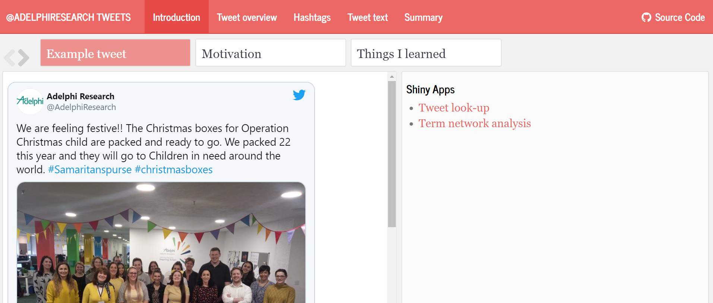
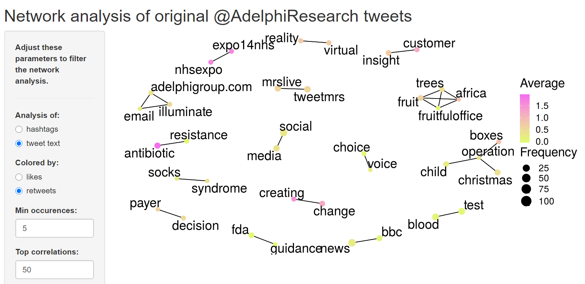
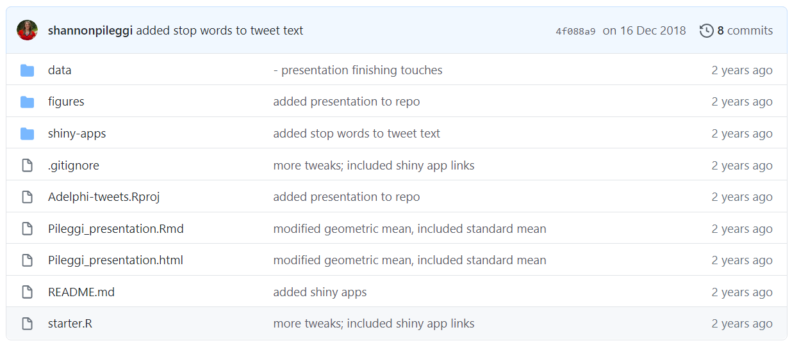

Table of Contents
TL; DR
I utilized resources from #tidytuesday, twitter, and blog posts to create a job interview presentation that provided insights on my prospective employer while showcasing my analytics capabilities.
Back up
When I was told that my interview at Adelphi Research would involve a presentation, I was pretty happy. A presentation allows the candidate to highlight their strengths, and, after being a college professor for six years, I was confident in my public speaking. The specific presentation instructions were:
This can be any 20 minute presentation you’d like to share with the team; our recommendation is that it focuses on Market Research, is something innovative, and something that you’re particularly proud of!
It was also briefly mentioned in the phone screening that the analytics group with whom I was interviewing was just beginning to develop shiny applications.
Formulation
Then I faced the dilemma of what to actually present. I wanted to shine as a candidate, but my previous academic experience was tangential to this industry. I took their instructions to heart and decided to create something of which I was truly proud. I developed a project with three goals in mind:
Learn about my prospective employer.
Cultivate my nascent tidyverse skills.
Invest in new analytic methods and coding techniques that could serve future me.
From there, I had to figure out what I would actually present.
Fortuitous tweets
This was winter 2018, which also happened to be the inaugural year of #tidytuesday. Prompted by David Robinson’s screencast analyzing medium articles with tidytext, I was inspired to apply the same principles of text analysis to my prospective employer’s twitter account.
In this week's #tidytuesday screencast, I use tidytext to analyze what titles get claps on Medium posts. Practical guides on tensorflow/keras are the hottest, words like “marketing”, “trends” and “industry” don't get you far https://t.co/oNhZm40mpW #rstats pic.twitter.com/cxYO2MIIqz
— David Robinson (@drob) December 4, 2018
As I started to create my presentation, I was also concerned with the actual format / deliverable for the presentation. I knew I wanted to create something in R, but I was not quite sure which direction to go. I tweeted an #rstats plea for advice and was inspired by Emily Riederer’s suggestion to use a flexdashboard for the presentation.
If you’re having trouble with xaringan, storyboards in flexdashboqrd can also make pretty nice presentations depending on the type of content / message you are trying to convey https://t.co/IC3moe01v0
— Emily Riederer (@EmilyRiederer) December 12, 2018
What I did
After many hours at the computer, several re-watches of David Robinson’s screencast, and a lot of research on R functions and analytic methods, I created a presentation about my prospective employer based on trends in their twitter account between 2009 (account start date) and 2018 (interview date). Here are the packages that I used, alongside their purpose with links to code on github:
rtweet: retrieve tweets from@AdelphiResearch.dplyr,forcats,lubridate,stringr, andpurrr: create new variables with regards to tweet descriptors and hashtag themes; summarize trends in top hashtags over timeggplot2: exploratory visualization of tweet frequency, trends in likes and re-tweets per tweet, and trends in hashtag themes over timetidytext: transform tweet words to analyzable tokens; prepare words for modelingwidyr,igraph,ggraph: network analysis of common hashtag themes and tweet textglmnet: lasso model to assess word associations with likes and retweetsshiny: develop shiny apps to search tweets and explore the network analysesflexdashboard: assemble it all in a presentation
Yes, it was a lot! Especially because the tidyverse, pulling tweets, text analysis, network analysis, lasso models, flexdashboards, and shiny apps were all very new to me.
Results
I hosted my presentation and the two shiny applications on shinyapps.io, and I made my code publicly available on github.
| Link |
Preview |
|---|---|
| Interview presentation |  |
| Shiny app for tweet look up |  |
| Shiny app for network analysis |  |
| Code on github |  |
In the end, I got the job! Along the way, I gleaned insights about the values and industry of my prospective employer, empowering me throughout the interview process. Additionally, my interviewers enjoyed the external data-driven view of their company’s tweets (despite, or perhaps because of, the fact that none of them were actually on twitter).
I embraced the interview as an opportunity to create my own side project to foster new skills that would serve me for other potential interviews, personal projects, or work projects. Yes, I probably could have secured a job offer with less effort, but I would have been less confident and I would have missed out on so many data and programming approaches that are now ingrained in my thought processes. And enabled by the #rstats twitter presence, the incredible packages that I used, and the numerous blog posts that I referenced, I had fun. Cheers, R! 🥂
Acknowledgements
Thumbnail artwork by @allison_horst. Thanks to Megan McClintock (my sister) for feedback and suggestions.